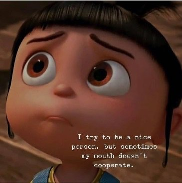

“He needs to do more shadow work.”
"He's a thug and an abuser."
“That’s pure out of control rage and violence. Will Smith lost his mind.”
-- misc Facebook and Twitter comments
“I could see criticizing Rajneesh if he had free will.
And if I had it.”
--Michael Markham
--
This one may make you angry. If so, no problem! Just make yourself NOT angry.
That is today’s Mind-Tickle.
❤️
Over the many years, I was fired from several jobs because I said things out-loud that one is not supposed to say, particularly to bosses.
The mouth would not be controlled. The dang thing opened by itself and bad-girl things came out of it, and then the next minute or week or month after that, I was unemployed again.
This inability to control the hole in my face continues to this day.
Which partly may be why the understanding I am not the doer has always come easy for me.
Because it couldn’t be more obvious that whatever is in charge of the ol' piehole, it ain’t moi.
Fast forward to last week’s Oscars, the epitome of putting lipstick and hairspray and tuxedos on the human pig, polishing the image, and presenting an attractive, likable and carefully-curated self to the world.
For a few hours, people who get paid to pretend they’re something they’re not, show the rest of us how it’s done.
Naturally there are rules to be followed to keep the public image looking good.
Number one is to appear like someone who has it All Together.
Whatever that means.
And of course, in daily everyday non-Oscars life, all the rest of us average Joes have to try to follow that same rule too.
And for a moment, Will Smith didn’t, or couldn’t, follow the rules of behavior.
“He chose violence.” “He lost control.”
Did he though?
Did he choose what happened? And did he ever have control of the self, in order to lose it?
Or is it more that Smith’s supposed command of himself fell away, on its own, when it wanted to, suddenly and without warning, in front of millions of witnesses?
In full replayable view, a man revealed, in a way that can’t be denied, that there is No control No control No control.
And the witnesses are outraged.
Aka terrified.
Because if Will Smith can’t “act right”- with all the powers of illusion at his disposal, and with all those years of presentation-honing and PR training and therapy and inner work and “knowing himself,”
If in any sudden moment, he can’t control things so that everything isn’t ruined forever,
what hope does any one of us have of controlling this façade?
How dare Will Smith force the rest of us to see that no human is in charge of mouth, thoughts, feelings, triggers, events, body?
How dare he slip up and reveal how completely powerless these supposed selves have ever and always been?
How terrifyingly clear, that can’t-ignore demonstration, of our own impotence, our own pretense, our own illusions.
Damn it Smith, you will pay for forcing us to see what we’ve spent a lifetime trying to hide from.
Bring on consequences (for him not us), demand for responsibility (his not ours), and insistence that Smith somehow gain control over what will not be controlled.
Bring on our righteous judgement and superior moralizing, as we tell sad stories of our own past trauma and how much of our own pain Smith managed to dredge up and make us feel.
Unwittingly.
But too bad.
Sorry but we will not be made to face our own powerless self.
Though if we’re honest, we can sense that our reaction is overblown, full of bloviating self-enhancement and self-perpetuation. We can feel the fear that we also have no power to react any differently to this situation.
Just like will Smith.
But never mind. There’s distracting-from-fear drama to enjoy.
So is your friendly Mind-Tickler saying there shouldn’t be consequences, or "responsibility", or that any behavior or any evil is ok?
Nah, consequences are what we do here.
We can’t help that either.
So sure, consequence away.
Let’s just not pretend this has anything to do with Will Smith.
And hopefully the gods will be good to us, and allow us to dream for a while longer- hell maybe forever-
That we have any power at all over what happens.
Or that the whole act of our own lives
couldn't all suddenly go up in smoke
in one mere open-mouthed moment.
Just like WIll Smith's.
--Watch Judy on Buddha at the Gas Pump
--Watch Judy and Shiv Sengupta discuss spiritual anarchy
--Click to watch Judy and Walter Driscoll have fun chatting about about nonduality, the self, consciousness, awareness, free will and other light and breezy stuff
--Watch Judy and Robert Saltzman talk nonduality
“Any time you're angry at anything outside you, question it, because to be angry at a mirror is insane.”
--Byron Katie
“There but for the grace of God go I.”
--John Bradford
“It could have happened.
It had to happen.
It happened sooner. Later.
Nearer. Farther.
It happened not to you.
You survived because you were the first.
You survived because you were the last.
Because you were alone. Because of people.
Because you turned left. Because you turned right.
Because rain fell. Because a shadow fell.
Because sunny weather prevailed.
Luckily, there was a wood.
Luckily there were no trees.
Luckily there was a rail, a hook, a beam, a brake,
a frame, a bend, a millimeter, a second.
Luckily a straw was floating on the surface.
Thanks to, because, and yet, in spite of.
What would have happened had not a hand, a foot,
by a step, a hairsbreadth
by sheer coincidence.
So you’re here? Straight from a moment still ajar?
The net had one eyehole, and you got through it?
There’s no end to my wonder, my silence.
Listen
how fast your heart beats in me.”
--Wislawa Szymborska
